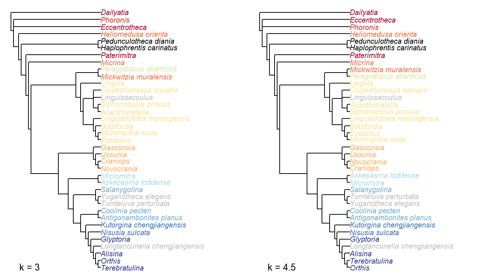
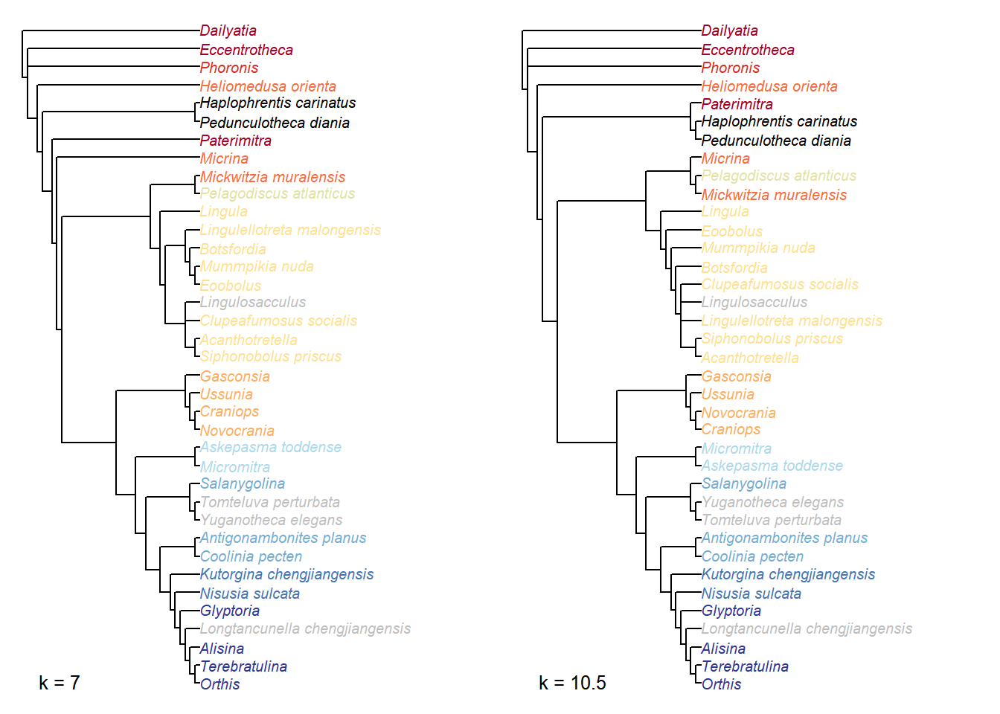
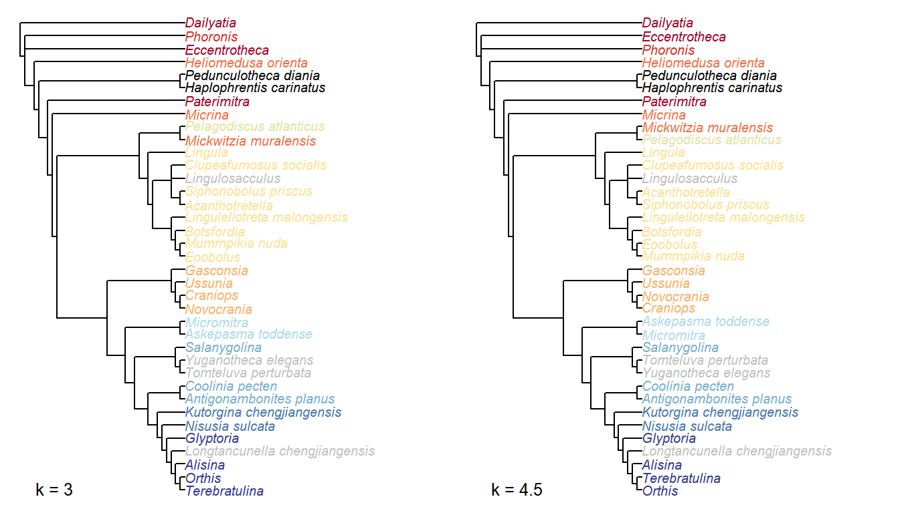
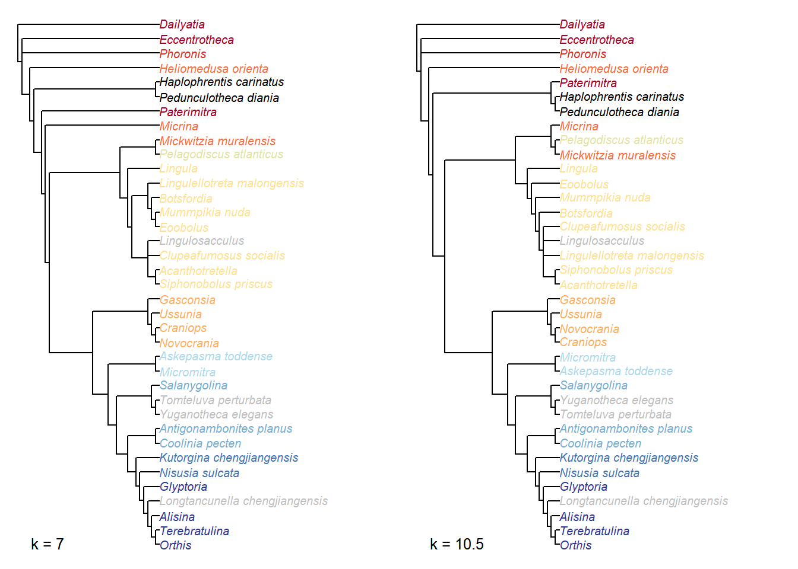

2 Parsimony analysis
The phylogenetic dataset contains a considerable proportion of inapplicable codings (451/3959 = 11.4% of tokens), which are known to introduce error and bias to phylogenetic reconstruction when the Fitch algorithm is employed (Maddison, 1993; Brazeau et al., 2018). As such, we employed a new tree-scoring algorithm that correctly handles inapplicable data (Brazeau et al., 2018), implemented in the MorphyLib C library (Brazeau et al., 2017). We employed the R package TreeSearch v0.1.2 (Smith, 2018) to conduct phylogenetic tree search with this algorithm.
2.1 Search parameters
Heuristic searches were conducted using the parsimony ratchet (Nixon, 1999) under equal and implied weights (Goloboff, 1997). The consensus tree presented in the main manuscript represents a strict consensus of all trees that are most parsimonious under one or more of the concavity constants (k) 2, 3, 4.5, 7, 10.5, 16 and 24, an approach that has been shown to produce higher accuracy than equal weights at any given level of precision (Smith, 2017).
2.2 Analysis
The R commands used to conduct the analysis are reproduced below. The results can most readily be replicated using the R markdown files used to generate these pages.
2.2.1 Initialize and load data
kValues <- c(2, 3, 4.5, 7, 10.5, 16, 24)
# Load file from MorphoBank
my_data <- ReadAsPhyDat(filename)
my_data$Namacalathus <- NULL # Exclude Namacalathus
iw_data <- PrepareDataIW(my_data)2.2.2 Generate starting tree
Start from a neighbour-joining tree, rooted on the outgroup.
nj.tree <- NJTree(my_data)
rooted.tree <- EnforceOutgroup(nj.tree, outgroup)
start.tree <- TreeSearch(tree=rooted.tree, dataset=my_data, maxIter=3000,
EdgeSwapper=RootedNNISwap, verbosity=0)2.2.3 Implied weights analysis
The position of the root does not affect tree score, so keep it fixed (using RootedXXXSwap functions) to avoid unnecessary swaps.
for (k in kValues) {
iw.tree <- IWRatchet(start.tree, iw_data, concavity=k,
ratchHits = 60, searchHits=55,
swappers=list(RootedTBRSwap, RootedSPRSwap, RootedNNISwap),
verbosity=0L)
score <- IWScore(iw.tree, iw_data, concavity=k)
# Write single best tree
write.nexus(iw.tree,
file=paste0("TreeSearch/hy_iw_k", k, "_",
signif(score, 5), ".nex", collapse=''))
iw.consensus <- IWRatchetConsensus(iw.tree, iw_data, concavity=k,
swappers=list(RootedTBRSwap, RootedNNISwap),
searchHits=55,
nSearch=150, verbosity=0L)
write.nexus(iw.consensus,
file=paste0("TreeSearch/hy_iw_k", k, "_",
signif(IWScore(iw.tree, iw_data, concavity=k), 5),
".all.nex", collapse=''))
}2.2.4 Equal weights analysis
ew.tree <- Ratchet(start.tree, my_data, verbosity=0L,
ratchHits = 25, searchHits=55, # ratchHits = 10 not enough
swappers=list(RootedTBRSwap, RootedSPRSwap, RootedNNISwap))
ew.consensus <- RatchetConsensus(ew.tree, my_data, nSearch=150, searchHits = 55,
swappers=list(RootedTBRSwap, RootedNNISwap),
verbosity=0L)
write.nexus(ew.consensus, file=paste0(collapse='', "TreeSearch/hy_ew_",
Fitch(ew.tree, my_data), ".nex"))2.3 Results
2.3.1 Implied weights results
Wildcard taxa have been excluded from the consensus tree shown above to improve resolution.
Figure 2.1: Consensus of implied weights analyses at all values of k
 



Figure 2.2: Implied weights results
2.3.2 Equal weights results
Figure 2.3: Strict consensus of equal weights results
Uncertainty in the position of Heliomedusa contributes to the lack of resolution in the equal weights results:
Figure 2.4: Strict consensus of equal weights results, taxa excluded
References
Maddison, W.P. 1993. Missing data versus missing characters in phylogenetic analysis. Systematic Biology. 42, 576–581. doi:10.1093/sysbio/42.4.576
Brazeau, M.D., Guillerme, T., Smith, M.R. 2018. An algorithm for morphological phylogenetic analysis with inapplicable data. bioR\(\chi\)iv. doi:10.1101/209775
Brazeau, M.D., Smith, M.R., Guillerme, T. 2017. MorphyLib: a library for phylogenetic analysis of categorical trait data with inapplicability. doi:10.5281/zenodo.815372
Smith, M.R. 2018. TreeSearch: phylogenetic tree search using custom optimality criteria. doi:10.5281/zenodo.1194595
Nixon, K.C. 1999. The Parsimony Ratchet, a new method for rapid parsimony analysis. Cladistics. 15, 407–414. doi:10.1111/j.1096-0031.1999.tb00277.x
Goloboff, P.A. 1997. Self-weighted optimization: tree searches and character state reconstructions under implied transformation costs. Cladistics. 13, 225–245. doi:10.1111/j.1096-0031.1997.tb00317.x
Smith, M.R. 2017. Quantifying and visualising divergence between pairs of phylogenetic trees: implications for phylogenetic reconstruction. bioR\(\chi\)iv. doi:10.1101/227942